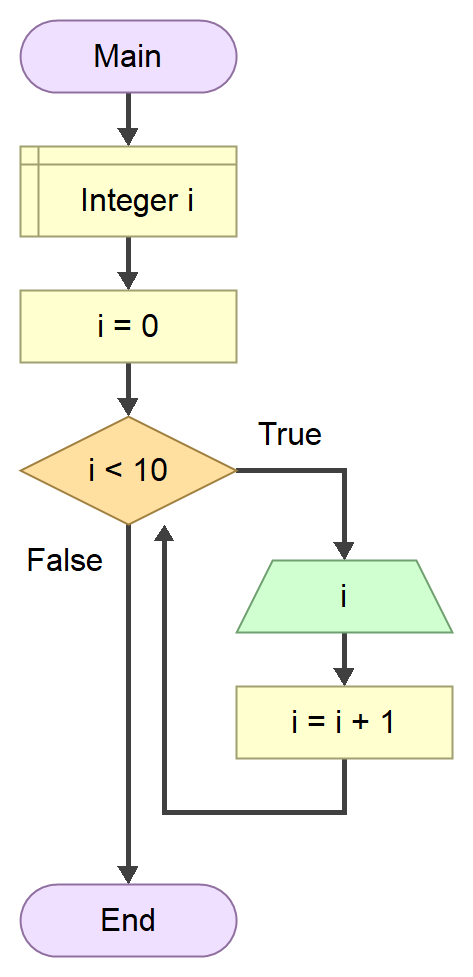
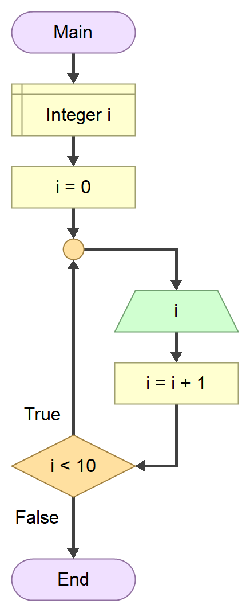

Наредбе циклуса са предусловом и постусловом¶
Наредба циклуса са предусловом¶
Наредба циклуса while користи се за циклусе са неодређеним бројем понављања и
извршава се све док је израз у заглављу тачан. Општи облик наредбе је следећи:
while (izraz)
naredba
Управљачки израз, односно услов за излазак из петље, налази се у заглављу петље па се због тога ова петља назива петља са предусловом. Тело петље може бити једна наредба или блок наредби које чине наредбе записане између витичастих заграда. Прво се проверава тачност управљачког израза, па ако је он тачан, односно различит од нуле, извршава се тело петље и ток програма враћа се на проверу тачности управљачког израза. Поступак се понавља све док је управљачки израз тачан. Ако је управљачки израз нетачан, односно једнак нули, излази се из петље.
За разлику од for петље, у while петљи број итерација није унапред познат.
Ако је при уласку у петљу управљачки израз нетачан тело петље неће се ни једном
извршити, односно број итерација биће једнак нули. Ако управљачки израз јесте
тачан, у телу петље мора се обезбедити механизам за промену вредности која
утиче на вредност управљачког израза у заглављу, иначе ће петља постати
бесконачна.
Напиши поново програм у програмском језику C који на стандардном излазу
исписује бројеве од \(0\) до \(9\) користећи петљу са предусловом while.
Алгоритам за решавање овог задатка представљен дијаграмом тока може да изгледа овако:
{kind=link}
Програм у програмском језику C може да изгледа овако:
#include <stdio.h>
int main(void)
{
int i = 0;
while (i < 10)
{
printf("%d ", i);
i++;
}
return 0;
}
На стандардном излазу исписаће се:
0 1 2 3 4 5 6 7 8 9
У петљу се улази након декларације и иницијализације целобројне променљиве
i = 0. Израз 0 < 10 у заглављу петље је тачан, па се прелази на извршавање
тела петље - на стандардни излаз исписује се тренутна вредност променљиве i
која износи 0, променљива i се инкрементира и добија вредност 1.
Управљачки израз 1 < 10 је и даље тачан, па се на стандардни излаз исписује
1, променљива i се инкрементира и добија вредност 2 и тако редом. Да у
телу петље није обезбеђен механизам за промену вредности која утиче на вредност
управљачког израза, израз i < 10 био би увек тачан и петља би постала
бесконачна. Када променљива i добије вредност 10, управљачки израз
10 < 10 постаће нетачан и излази се из петље.
Петље са предусловом могу бити бесконачне.
Претходни програм који на стандардном излазу исписује бројеве од \(0\) до \(9\) можеш написати и на следећи начин:
#include <stdio.h>
int main(void)
{
int i = 0;
while (1)
{
if (i < 10)
{
printf("%d ", i);
i++;
}
else
break;
}
return 0;
}
На стандардном излазу исписаће се:
0 1 2 3 4 5 6 7 8 9
Пошто је управљачки израз увек тачан јер је вредност израза увек 1, ова петља
била би бесконачна да није употребљена наредба break за „искакање” из петље.
Као што је речено у претходној лекцији, унутар тела једне петље може се
налазити једна или више других угнежђених петљи, написаних било којом наредбом
циклуса - for, while или do-while. Тако и петље са предусловом можеш
угнежђавати исто као и бројачке петље.
Наредба циклуса са постусловом¶
Наредба циклуса do-while користи се такође за циклусе са неодређеним бројем
понављања. Општи облик наредбе је следећи:
do
naredba
while (izraz)
За разлику од петље while, код петље do-while управљачки израз наводи се на
крају петље, па се због тога назива петља са постусловом. Тело петље може
бити једна наредба или блок наредби које чине наредбе записане између
витичастих заграда. По уласку у петљу прво се извршава тело петље, па се онда
проверава тачност управљачког израза. То значи да ће се тело петље извршити
макар једном, без обзира на тачност управљачког израза. Ако управљачки израз
јесте тачан, односно различит од нуле, поново се извршава тело петље. Поступак
се понавља све док је управљачки израз тачан. Ако је управљачки израз нетачан,
односно једнак нули, излази се из петље. То значи да у се оквиру блока наредби
мора обезбедити механизам за промену вредности које утичу на вредност
управљачког израза, како се не би креирала бесконачна петља.
Напиши поново програм у програмском језику C који на стандардном излазу
исписује природне бројеве од \(0\) до \(9\), али сада користећи петљу са
постусловом do-while.
Алогитам за решавање овог задатка представљен дијаграмом тока могао би да изгледа овако:
{kind=link}
Програм у програмском језику C могао би да изгледа овако:
#include <stdio.h>
int main(void)
{
int i = 0;
do
{
printf("%d\n", i);
i++;
} while (i < 10);
return 0;
}
На стандардном излазу исписаће се:
0 1 2 3 4 5 6 7 8 9
У петљу се улази након декларације и иницијализације целобројне променљиве
i = 0. Одмах се извршава тело петље - на стандардни излаз исписује се
вредност променљиве i која износи 0, па се променљива i икрементира и
добија вредност 1. Управљачки израз 1 < 10 је и даље тачан, па се на
стандардни излаз исписује 1, променљива i се инкрементира и добија вредност
2 и тако редом. Поступак се понавља све док је израз i < 10 тачан. Да у
телу петље није обезбеђен механизам за промену вредности која утиче на вредност
управљачког израза, израз i < 10 био би увек тачан и петља би постала
бесконачна. Када променљива i добије вредност 10, управљачки израз
10 < 10 постаће нетачан и излази се из петље.
Петље do-while могу такође бити бесконачне.
Исти програм који на стандардном излазу исписује природне бројеве од \(0\) до \(9\) можеш написати и на следећи начин:
#include <stdio.h>
int main(void)
{
int i = 0;
do
{
if (i < 10)
{
printf("%d\n", i);
i++;
}
else
break;
} while (1);
return 0;
}
На стандардном излазу исписаће се:
0 1 2 3 4 5 6 7 8 9
Пошто је управљачки израз увек тачан јер је вредност израза увек 1, ова петља
била би бесконачна да није употребљена наредба break за „искакање” из петље.
Правила о угнежђавању петљи са постусловом, важе као и за бројачке петље и петље са предусловом.